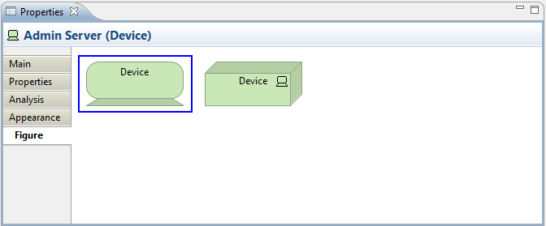

Selecting an element in a View means that you can edit or view additional visual properties in the Properties Window. Different visual settings can be applied to an element for each separate occurrence in a View. For example, the element "Application Service" may be coloured blue in one View, and grey in another View.
The Appearance Tab

Editing the "Appearance" Properties for an ArchiMate Element in a View
This tab is only available when an element is selected in a View.
| Fill colour: | Sets the fill colour for the selected element. The "Default" button sets the fill colour to the default setting. |
| Font: | Sets the font used for the text in the selected element. The "Default" button sets the font to the default setting as set in Preferences. |
Font colour: |
Sets the colour of the font used for the text in the selected element. The "Default" button sets the fill colour to the default setting. |
| Line colour: | Sets the colour of the line used to draw the selected element. The "Default" button sets the line colour to the default setting. If this is disabled it is because line colours are derived from the element's fill colour, as set in Preferences. |
| Text Alignment: | Align text in the selected element to Left, Centred or Right. |
The Figure Tab
Setting the "Figure" Properties for a Device
This tab is only available when an element is selected in a View and only for certain figures.
Some elements can be represented by different figures. These are:
Application Interface
Business Interface
Business Process
Infrastructure Interface
Application Component
Node
Device
The default figure to use when creating new elements can be set in Preferences.